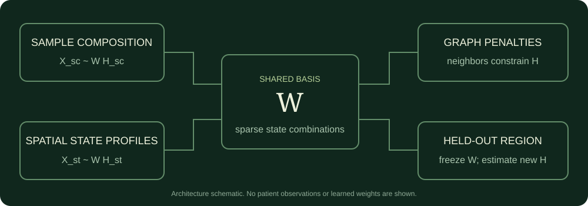

从组成模块走向空间联合发现
CoVarNet 让我感兴趣的地方，是它把细胞生态变成了一个可以分解的问题：哪些细胞状态会在不同样本中共同变化？但原先的工作流先从单细胞样本组成学习模块，再将模块恢复到空间数据上。空间坐标主要服务于后续解释。
我在 2026 年 8 月建立的 SpaCoVarNet-GS 原型，把问题往前推了一步：能否让样本组成与空间邻接共同参与模块发现？这次改造落实到了共享基底、多视图载荷、图约束、显式稀疏、KL 更新和区域留出代码。历史结果也给了一个清楚的提醒：让活动图更平滑，并没有在当时的小规模试验里换来稳定的留出重构收益。
这里复盘的是旧版 106 状态、755 个单细胞样本、单个 6,090 细胞 CosMx 视野的算法试验，rank 固定为 9。它与 2026 年 10 月的 172 节点或免疫图谱 CM 属于不同输入版本。
原 CoVarNet 采用 R 包中的 nsNMF，其重构写成 X ≈ W S H，含有平滑矩阵 S；将它简单称为 vanilla NMF 会丢掉关键定义。X 的行是细胞亚群，列是样本，输入首先涉及大类内部频率及跨样本缩放，NMF 因子之后还要经过相关网络筛选，才能形成相应的模块网络。CoVarNet 原论文与NMF 官方手册分别给出方法背景和模型定义。
Python 迁移首先改变了什么
Project_v2 保留了另一条更早的路线：将频率计算、相关筛边、模块网络、固定 W 恢复和空间统计迁移到 Python。它的价值首先是把数据接口与数值步骤拆开，方便定位跨语言差异。
这次读源码时，一个细节特别值得记下：fit_nmf_modules 调用了 sklearn 的 NMF，但没有显式传入 beta_loss 或 solver；恢复函数则手写了固定 W 的 KL 乘法更新。因此，工作流迁移不能直接写成 R nsNMF 的数值等价复现。sklearn 的默认损失是 Frobenius，也没有在这个调用中引入 nsNMF 的 S。对模型家族、损失、缩放和初始化逐项对齐，才有资格讨论结果相似或加速。sklearn 官方接口
固定 W 更新 H 是迁移中真正需要守住的语义。新样本应进入同一个基底坐标，不能在“恢复”时把 W 一起重新学习。至于节点顺序、缺测处理和网络 specificity，它们也需要单独核对，函数名一致并不足够。
共享 W 并给每个视图自己的 H
Project_v4 没有直接把基因表达、空间计数和样本频率混成一张矩阵。首版先在共同的细胞状态轴上工作：
W 描述各模块由哪些状态构成。单细胞视图与空间视图共享 W，但分别拥有 H：一个样本和一个空间位置可以由不同模块混合解释。共同的行轴是必要条件；行名与顺序仍由上游连接核对，低层求解器对行数的检查不能识别同维度的错序。

最小求解器实际实现的目标可写为：
视图权重 ω 默认与观测数成反比，再做公共归一化；pilot 还将 CosMx 权重乘以 0.1。其目的，是让大量空间细胞不因列数更多就支配拟合。这是目标权重的设计，不能消除平台偏差或使观测成为独立重复。CosMx 当时仅覆盖 mapper 4,000 基因中的 486 个，也限制了状态软映射的精度。
L1 项为模块基和活动量提供显式稀疏惩罚，δ 项抑制列间重复；历史 pilot 的 δ 为零。它们不等于在新模型中复刻 nsNMF 的 S。设计稿还列出了状态图与跨模态 anchors，但当前这份求解器并没有实现这两项，不能把完整蓝图当作已交付功能。
把空间图放进优化目标
对一个视图，A 是非负邻接矩阵，D 的对角线为加权度，L=D−A。图惩罚鼓励相邻观测的 H 接近。空间坐标因此开始影响训练，而不只是用于画出训练后的活动。
Frobenius 分支的 H 更新中，来自邻居的 λ H A 进入分子，λ H D 进入分母；再加上重构与 L1 部分。空间图作用于 H，W 则通过交替优化间接受到影响。这个区别决定了后续评估究竟测量什么。
工程上，kNN 使用 cKDTree 查局部邻居，图保持稀疏形式，避免构造完整的两两距离矩阵。但输入视图和因子仍是稠密数组，KL 分支也需要 WH 与逐元素比值；图稀疏不等于整个求解器已经适合全尺度空间图谱。
为了区分真实邻接与一般平滑效果，历史实验比较了无图、真实图、坐标置换图和度数保持重连图。重连保持每个节点的无权度数及全图边权多重集合，但并不保持每个节点的加权强度。这些零模型各自控制一部分结构，不能称为完全匹配的空间替身。
KL 扩展需要一起更换数值步骤
首版用 Frobenius 检查流程，随后新增可选的 loss="kl"。广义 KL 为非负输入提供另一种重构目标，不能只把最终打印的误差换个名字：W 更新、H 更新和目标记录都要保持一致。
W 的重构更新相应使用 R Hᵀ 与按行汇总的 H。实现用 xlogy 处理零项，并以 epsilon 保护分母。非负频率允许使用广义 KL，但归一化组成不是原始整数计数；采用这一损失，本身并未建立经过验证的 Poisson 计数生成模型。
KL 与 Frobenius 的数值尺度不同。直接沿用相同 λ，图惩罚相对数据拟合的强度也可能变化。所以这里的跨损失结果是固定设置的敏感性检查，不能把它解释为两种损失已得到公平调优后的排名。
更平滑以后 模块有没有更好
历史多 seed 结果中，真实图的 roughness 比两种零模型都低。下表使用已保存 summary 的精确配对均值差；负值表示真实图更平滑。
| 损失与初始化 | 真实图减坐标置换 | 真实图减度数重连 | 方向一致 |
|---|---|---|---|
| Frobenius，30 seeds | −0.233257 | −0.226057 | 两组均 30/30 |
| KL，15 seeds | −0.133999 | −0.121414 | 两组均 15/15 |
这些重复显示的是同一输入上的算法方向一致性。seed 不是新患者，真实图又直接参与训练，因此这个指标不能独立证明空间生物学或泛化改善。与旧 W 的相似度也没有给出稳定的正向增量；它衡量的是接近旧参照的程度，而新方法的价值不必体现为更像旧 W。
后续真正改变了判断的是区域留出。一个视野按坐标分成 8 个块，训练阶段排除整块观测，在剩余坐标上重建图；然后固定训练所得 W，为留出 X 估计 H。第二次换分区 seed 再做 8 折。两轮均使用 Frobenius 训练，不能写成 KL 留出也已完成。
| 划分 | 真实图−无图 MSE | 真实图−置换图 MSE | 真实图−重连图 MSE |
|---|---|---|---|
| 分区 seed 0，8 折 | +2.8371 × 10⁻⁵ | −1.5373 × 10⁻⁵ | −1.6826 × 10⁻⁵ |
| 分区 seed 1，8 折 | +1.4172 × 10⁻⁶ | −2.7713 × 10⁻⁶ | −4.0849 × 10⁻⁶ |
正值表示真实图误差更高。两次划分来自同一视野，各折训练集重叠，16 折不能当成 16 份独立组织重复；完整比较及原始名义检验值见下方机器可读摘要。
真实图相对两个零模型的平均 MSE 较低，但逐块方向不够稳定；相对无图也没有体现收益。源码还揭示了一个比较边界：no_graph 将 sc 与 spatial 两个图强度同时设为零，而另外三组都启用 sc 图。因此，“真实图−无图”是组合约束的比较，不能单独归因于空间图。
固定 W 投影还应读成字典重构：留出区域的 X 被用来估计自身 H。它没有让留出 X 改写 W，但也不是在没有表达观测的情况下预测该区域，更不是跨患者外部验证。
后来来源等权改的是另一件事
2026 年 10 月的另一条改造保留了 nsNMF，改变的是不同来源在 KL 目标中的贡献。若来源 s 有 n_s 个分析单位，总数 N、来源数 S，可令该来源各列权重为 w_j=N/(S n_s)，使每个来源的总权重相同。
项目方法据此缩放输入列，拟合后还原 H；比较重构贡献时使用 nsNMF 的有效基 W S，再做全组分一一匹配。这是来源权重敏感性，并未引入空间图或证明消除了混杂。将两条路线分开，才能知道一个变化回答的是“谁主导了目标”，还是“邻接是否帮助了表示学习”。来源等权方法记录
这次改造留下的判断标准
最有用的经验，是在修改目标函数之前写清楚它应该改善哪个问题。多视图、图正则、显式 L1 和 KL 都可以落成代码；模型是否值得进入更大的研究，需要另一套证据。
- 先核基线。语言迁移、普通 NMF、nsNMF 与新图约束模型分别命名，损失与输入缩放逐项记录。
- 让消融只改变目标项。固定 sc 图，仅切换 spatial 图，并检查正则相对尺度；λ 与 rank 在训练设计中选择。
- 让留出匹配主张。同视野区域重构可以检查局部字典迁移；整切片、患者或队列主张需要对应的独立留出。
- 明确稀疏与尺度。W/H 的互相缩放会改变惩罚。事后归一化便于比较，不自动解决训练时的尺度选择；后续约束应与目标一致。
- 保留负结果。没有稳定收益是决定下一步投入的依据，不能靠换一个更好看的空间指标将它覆盖。
这条探索把“空间看起来有结构”推进到了一个更具体的问题：空间约束学到的字典，能否解释未参与训练的组织区域？在当时的输入与设置下，答案还没有得到支持。这个边界，也是一项算法改造应当交付的结果。
方法与证据入口
本文于 2026 年 10 月 28 日回读 Project_v2 与 Project_v4 的代码、开发记录及五份聚合 summary；没有重新拟合原始数据。算法试验日期为 2026 年 8 月，来源等权敏感性属于 10 月的另一任务。
- 下载方法指纹与完整聚合比较 JSON：含逻辑来源路径、SHA256、参数和已有 summary 的全部配对检验；其中 P 值是历史名义值，不作为本篇独立生物学推断。
- 实现定位：
Project_v2/CoVarNet/python/covarnet_py/core.py；Project_v4/src/spacovarnet/graph_sparse_nmf.py。 - 开发记录：Project_v4 的 00 算法设计、06 多 seed 否证、07 KL 扩展与 08 区域留出日志。指纹证明本次引用的文件版本，复算历史结果仍需要对应输入与运行环境。
作者：熊鑫。本文为研究方法复盘；原始数据、个体记录与学习权重不随文章发布。所有数值均限定于相应历史试验。